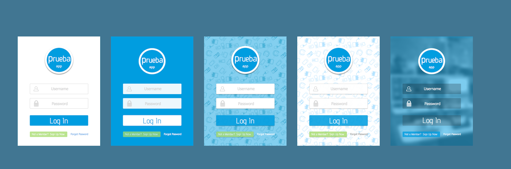
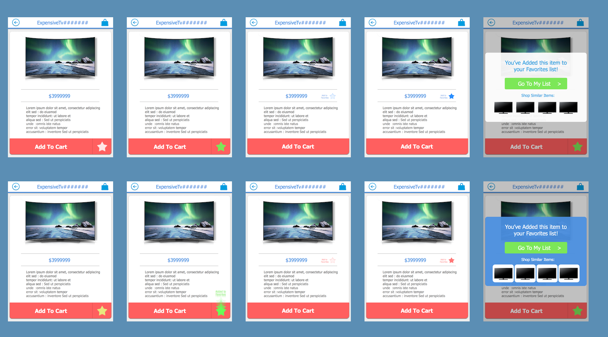
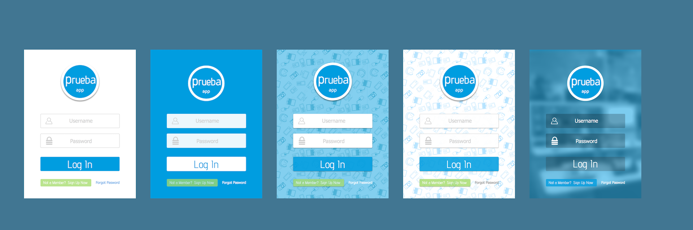
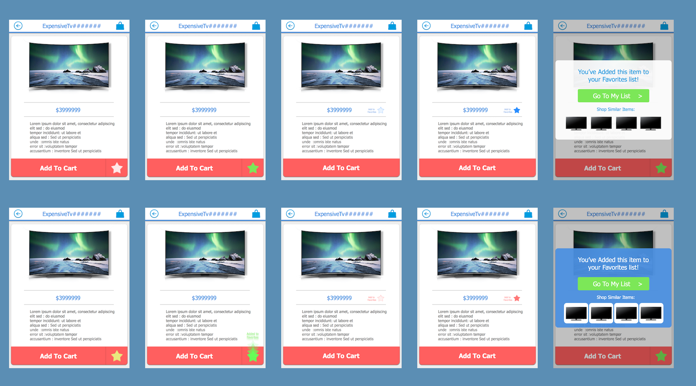
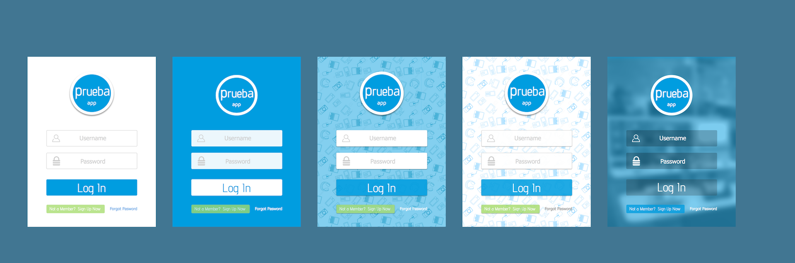
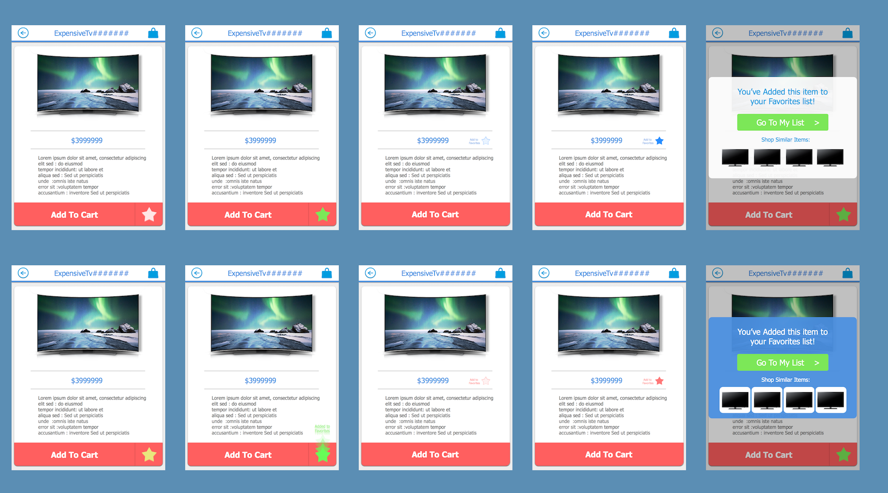

I design and create intuitive and immersive user exeriences I have experience in a wide range of environments and industries My skillset is extensive and ever developing
User Analysis and Interaction Design
User Interface Design (Wireframes/Mockups/Prototypes)
In this somewhat extensive project, I was asked to lead a team to create from scratch a new web presence for a major technology consultancy. As project manager/lead designer/lead programmer, I worked with company executives, marketing department, and the in-house graphics expert to create a sleek and modern way of presenting the company's many technical offerings. Some of the features implemented include:
Complex sub-menu waypoint navigation
Use of bleeding edge techniques for vector graphics animation and interaction
Construction of a wordpress theme for company blog to match styling and feel of main site
JSON/AJAX based integrations to pull dynamic content from company blog as well as third party job boards
Spanish language translation, built in coordination with Chile office
I was brought in on a project at a large mobile gaming company to come up with the layout and design of a dashboard interface for visualizing and analyzing large amounts of realtime data. Following a Scrum development methodology, I worked closely with their in-house product managers and UI programmers, rapidly iterating on annotated visual mockups, as well as interactive clickthroughs and demos. Building on their previous visual motifs, I ventured to create an interface that reflected the futuristic yet playful essence of their brand.
Material Design in the Produce Section
I was asked to provide a new look and functional redesign to the web product search function of a major supermarket chain. I spotted on the original site that a point of major potential user dropoff was that users would have to log in to their accounts to be able to access the product catalog at all. My design served to provide a solution in which users could search and browse the entire catalog regardless of being logged in, but would need to log in for purchasing options. The project requirements also called for some form of "quickview" where users can get extended product info at a glance.
I was asked to design a branded dashboard interface for internal use by QA engineers and developers at a major mobile gaming company. The idea was to provide an intuitive and engaging way for engineers to track the status of multiple job queues in realtime, as well as providing visual reports for analysis. The engineers wanted a tool that would be simple and communicative enough to be useful on a laptop or tablet when they were away from their workstation.
User Centered Design in Chile
As a demonstration of User Centered Design principles, I worked closely with a team in Chile leading the design of a mobile app pilot, a "Prueba App", for a major Chilean department store. Following the model of the Lean startup, we set out to create a mobile app with features designed to cater to specific user "problems", which we discovered through surveys and observations of real users in-store.
In order to avoid the high development costs of fully implementing any given feature, I led the team in coming up with clever "discount test apps". These were designed to flush out just enough user interaction and indication of intent to prove useful without requiring costly backend implementations. This provided a creative challenge, and led to interesting situations for my team in Santiago, ranging from observing users' clicks through a dummy interface on an android phone, to running from mall security hoping the photos they took of the fire maps were clear enough for me to "vectorize" (They were, just barely).
For each feature, the team created a functional app based on my designs that could be tested in a real store. By the end, we had designed an app that was not only modern and appealing, but far more unique in function than a standard shopping app.
Product Catalog / Product Info
'Take a Numer' Style Checkout Reservation
Interactive Store Map with Section Markers
Menus / Login / Favorites


Marketing: In-Store advertising and Push Promotions
Early Designs for QR/UPC Product Scan
A New Look for Medical Career Training
I was asked to do a refresh and redesign for the website of a training school for medical professionals. While retaining the medical branding of of their original site I offered a design that was not only sleek and modernized, but allowed for greater focus on happenings and culture within the school community.
'This is Kathy'
Short animation showcasing the potential possibilities of data driven eCommerce tools and personalized online shopping. Created in After Effects.
'Discover A Coffee'
Motion Graphics for a portrait mode digital signage display in a coffee shop. It adds life and motion to art motifs from the company's static campaigns at the time, showing how static branding can be brought to life in pixels. Created in After Effects
'The Agile World of Tomorrow'
This video was created to introduce a company workshop on Agile methodologies. I reimagined Agile as something from the early days of computer development, imbued with all the charms of mid-century futurism. This was mainly an exercise in pilfering the internet archive, and speaking sans-breathing.


 Full Stack Website & WebApp Development
Full Stack Website & WebApp Development 2D/3D visual design, motion graphics
2D/3D visual design, motion graphics Video & Music/Audio production
Video & Music/Audio production


 


